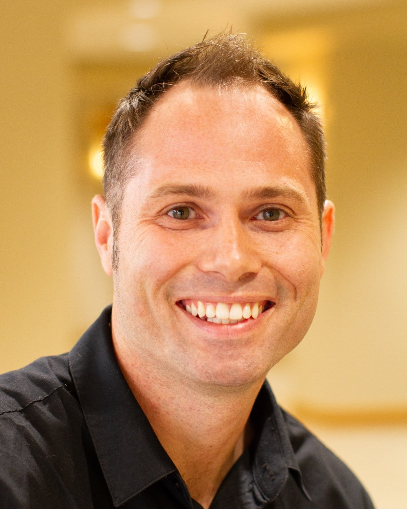

An operator's eye. A coach's heart.
I'm a pastor who loves the local church and can't stop asking how it works. I diagnose before I prescribe. Then I stay in the room until your team can run it without me.
Campus Pastor, The Church of Eleven22 · Former NextGen & Young Adult Pastor, First Baptist Orlando · 20+ years inside the local church

I've spent 20+ years in the seat you're sitting in.
I've done this work from the inside. Not as an outside expert with a binder. As a pastor with a staff, a budget, a calendar, and people counting on me.
I earned a Bachelor of Science in Business Economics from the University of Central Florida. I'm glad I did. It taught me to sit with a budget, a system, and a question of resource allocation, and to ask what the numbers are really saying. Paired with 20+ years of leading in ministry, that's the lens I bring. The degree doesn't replace the church. It helps me see it more clearly.
At First Baptist Orlando, I served as NextGen and Young Adult Pastor. I led NextGen across five campuses, reaching 1,700+ people every week, with a team of 28 staff and a $2.4M budget. I relaunched our Young Adult ministry. I built a six-year roadmap for students. I trained volunteers, rebuilt systems, and watched what happens when a team finally knows who owns what.
That wasn't only a multisite story. Student ministry at First Baptist Church of Saint Cloud grew from 10 to 140. Young Adults was its own ministry to rebuild. A single ministry can need the same clarity as a church with five campuses.
Today I serve as Campus Pastor for The Church of Eleven22's first Orlando campus.
I've raised up interns into ministry leads, and I've raised up my replacement in every role I've held.
Along the way I learned that most ministries don't stall because people don't care. They stall because the vision is fuzzy, the systems are duplicated, and ownership is unclear. Fix those, and good people do great work.
That's why I started Phase Forward. I work in three steps: Analyze, Construct, Unleash. When I coach a leader through a decision, I use a smaller method, the C.L.E.A.R. method: Clarify the real problem, Locate the tension, Examine the options, Act with clarity, and Review and refine.
A few things I won't compromise on.
Turnarounds, not theory.
Results from my past ministry roles, not Phase Forward client outcomes.
I've led growth at every size. Not in one kind of church. In student ministry at First Baptist Church of Saint Cloud, we grew from 10 to 140. I was NextGen Pastor at First Baptist Orlando, a large church. And I launched College Park Orlando, the first out-of-market campus of The Church of Eleven22, one of the fastest-growing churches in the country. The launch was the start. I was helping build a repeatable system for future campuses. The principles carry across sizes.
First Baptist Church of Saint Cloud.
Within 18 months of the relaunch. The volunteer pipeline built a 60+ person leadership core.
Attendees. 44% growth.
Students moved toward baptism and discipleship through a relationship-based follow-up model.
As Campus Pastor, I launched College Park Orlando, the first out-of-market campus of The Church of Eleven22, one of the fastest-growing churches in the country. I was helping build a repeatable system for future campuses.
45% of adult attendance was serving at the College Park Orlando launch.
First Orlando NextGen: multi-campus strategy. I directed a $2.4M annual budget. 130+ volunteers mobilized.
Residency program: 3 residents transitioned into full-time vocational ministry. I prepared my replacement for Student and Young Adult ministries. I've raised up interns into ministry leads, and I've raised up my replacement in every role I've held.
Is this a fit?
Churches, single-site to multisite, and the ministries inside them. If you lead people and a mission, we can start there.
Best fit
- Churches, single-site to multisite, navigating growth, a new campus, or a generational handoff.
- The ministries inside them: NextGen, students, young adults, groups, campuses.
- Senior pastors, staff teams, and leaders in the middle seat.
- Mission-driven nonprofits that need the same operating clarity.
Not the right fit
- Leaders who want a deck and an exit. I stay in it with your team.
- Teams not ready to change the structure or the calendar.
- Organizations looking for a vendor instead of a partner.
- Anyone hoping a consultant will replace the hard conversations on the team.